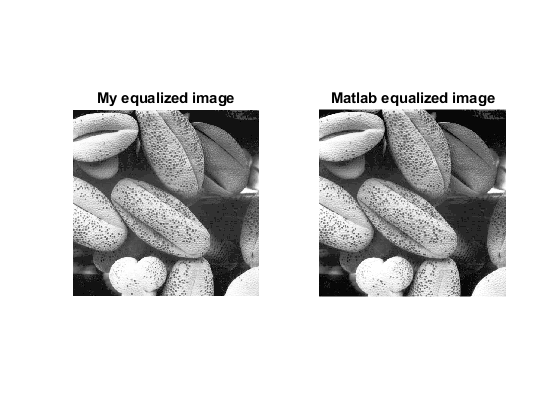
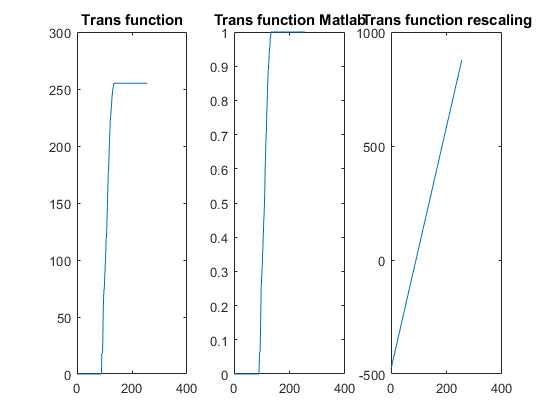

food=imread('Food.jpg');
[scaledFood,k,b]=Scaling(food,[0 255]);
disp('------Finish Solving Problem 1------');
pause();
matScaledFood=imadjust(food,[double(min(food(:)))/255 double(max(food(:)))/255],[0 1]);
figure;
subplot(1,2,1),imshow(scaledFood),title('My result');
subplot(1,2,2),imshow(matScaledFood),title('Matlab result');
disp('------Finish Solving Problem 2------');
pause();
[food_histogram,food_nor_histogram]=CalHist(scaledFood);
[food_histogram_mat,food_nor_histogram_mat]=CalHist(matScaledFood);
figure;
subplot(1,2,1),bar(food_nor_histogram),title('My result');
subplot(1,2,2),bar(food_nor_histogram_mat),title('Matlab result');
disp('------Finish Solving Problem 3------');
pause();
[equalizedFood, transFunc]=HistEqualization(food,255);
disp('------Finish Solving Problem 4------');
pause();
[equalizedFood_mat,transFunc_mat]=histeq(food);
figure;
subplot(1,2,1),imshow(equalizedFood),title('My equalized image');
subplot(1,2,2),imshow(equalizedFood_mat),title('Matlab equalized image');
X=linspace(0,255,256);
figure;
subplot(1,3,1),plot(X,transFunc),title('Trans function');
subplot(1,3,2),plot(X,transFunc_mat),title('Trans function Matlab');
scaling_Y=X.*k+b;
subplot(1,3,3),plot(X,scaling_Y),title('Trans function rescaling');
disp('------Finish Solving Problem 5------');
pause();
tic;
[equalizedFood, transFunc]=HistEqualization(food,255);
end_time=toc;
fprintf('Time cost for my HistEqualiztion is %f\n',end_time);
[equalizedFood_mat,transFunc_mat]=histeq(food);
end_time_mat=toc;
fprintf('Time cost for histeq is %f\n',end_time_mat);
disp('------Finish Solving Problem 6------');
pause();
function[enhancedIm, transFunc] = HistEqualization(inputIm, level)
min_pix=double(min(inputIm(:)));
level=level+1;
transFunc=zeros(1,level);
[row,col]=size(inputIm);
n=row*col;
sum=0;
for i=min_pix:level
pfk =size(inputIm(inputIm==i),1)./n;
sum=sum+pfk;
gl=round((level-1)*sum);
transFunc(i)=gl;
end
transFunc=uint8(transFunc);
enhancedIm=inputIm;
for i=1:row
for j=1:col
enhancedIm(i,j)=transFunc(inputIm(i,j));
end
end
end
function [histogram,nor_histogram]=CalHist(org_image)
max_pixel=max(org_image(:));
histogram=zeros(max_pixel,1);
nor_histogram=zeros(max_pixel,1);
[row,col]=size(org_image);
n=row.*col;
for i=0:max_pixel
n_k=sum(sum(org_image==i));
histogram(i+1)=n_k;
nor_histogram(i+1)=n_k./n;
end
end
function [scaledIm,k,b] = Scaling(inputIm, range)
[row,col,color_channel]=size(inputIm);
if color_channel>1
error('Input Image is not grey');
end
if size(range)~=2
error('The size of range should be 2');
end
old_min=min(inputIm(:));
old_max=max(inputIm(:));
new_min=range(1);
new_max=range(2);
if new_min<0 || new_max>255 || new_max<new_min
error('Please enter valided range!');
end
k=(new_max-new_min)./double(old_max-old_min);
b=new_min-k*double(old_min);
scaledIm=k.*double(inputIm)+b;
scaledIm=uint8(scaledIm);
end
------Finish Solving Problem 1------
------Finish Solving Problem 2------
------Finish Solving Problem 3------
------Finish Solving Problem 4------
------Finish Solving Problem 5------
Time cost for my HistEqualiztion is 0.257609
Time cost for histeq is 0.259682
------Finish Solving Problem 6------
 